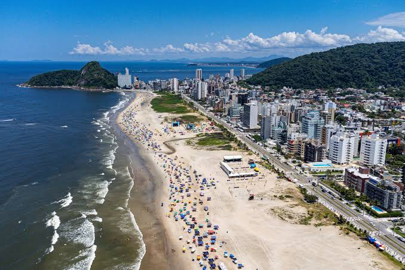
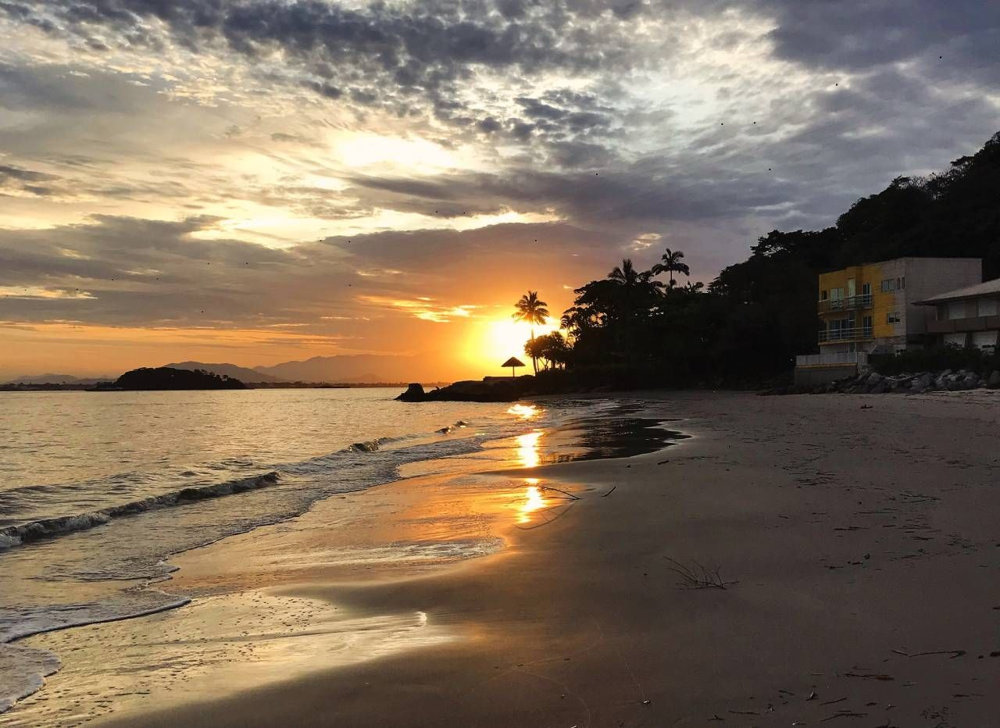

Muito além das praias, o litoral do Paraná esconde mistérios coloniais, lendas piratas e uma das áreas de Mata Atlântica mais preservadas do Brasil.
O litoral do Paraná funciona como o verdadeiro berço histórico, artístico e cultural de todo o estado, estabelecendo uma relação profunda de identidade que molda as tradições paranaenses. Foi nas cidades coloniais da região, como Paranaguá, Morretes e Antonina, que nasceram as primeiras grandes manifestações das artes visuais do estado, servindo de inspiração para pintores pioneiros como Íria Correia e o mestre norueguês Alfredo Andersen, que eternizaram a exuberância da Mata Atlântica e o cotidiano portuário em suas telas. Além disso, a cultura caiçara preservada nas comunidades litorâneas deu origem ao Fandango Caiçara — uma dança e gênero musical executado com rabecas e tamancos de madeira, hoje reconhecido como patrimônio imaterial do Brasil. Essa conexão viva se estende ao artesanato local em fandandgo e fibras naturais, à culinária típica do barreado e à arquitetura colonial, provando que a alma cultural do Paraná está profundamente enraizada em suas águas e costeiras.O litoral do Paraná funciona como o verdadeiro berço histórico, artístico e cultural de todo o estado, estabelecendo uma relação profunda de identidade que molda as tradições paranaenses. Foi nas cidades coloniais da região, como Paranaguá, Morretes e Antonina, que nasceram as primeiras grandes manifestações das artes visuais do estado, servindo de inspiração para pintores pioneiros como Íria Correia e o mestre norueguês Alfredo Andersen, que eternizaram a exuberância da Mata Atlântica e o cotidiano portuário em suas telas. Além disso, a cultura caiçara preservada nas comunidades litorâneas deu origem ao Fandango Caiçara — uma dança e gênero musical executado com rabecas e tamancos de madeira, hoje reconhecido como patrimônio imaterial do Brasil. Essa conexão viva se estende ao artesanato local em fandandgo e fibras naturais, à culinária típica do barreado e à arquitetura colonial, provando que a alma cultural do Paraná está profundamente enraizada em suas águas e costeiras.

Litoral Paranaense: Quatro Séculos de História e Colonização
O litoral do Paraná é o berço histórico e cultural do estado, nascido em 1640 na Ilha da Cotinga e consolidado em Paranaguá (1648) sob a liderança de Gabriel de Lara, durante a busca pelo ouro colonial. Isolada pela Serra do Mar, a região misturou as heranças de indígenas Carijós, portugueses e africanos, dando origem às comunidades caiçaras e ao Fandango Caiçara, ritmo tradicional batido com tamancos de madeira. Nos séculos XVIII e XIX, cidades como Morretes e Antonina cresceram com o comércio da erva-mate, culminando na inauguração da Estrada de Ferro em 1885, obra prima dos engenheiros negros Antônio e André Rebouças. Essa riqueza paisagística e portuária atraiu artistas como o mestre norueguês Alfredo Andersen e a pintora Íria Correia, que imortalizaram em telas a união definitiva entre a história, a arte e a exuberante Mata Atlântica paranaense.

O Coração Cultural do Paraná: Onde a Arte e a Tradição se Encontram
O litoral do Paraná é o pilar fundamental da cultura do estado. O antigo isolamento pela Serra do Mar preservou a identidade caiçara e o Fandango Caiçara, ritmo tradicional batido com tamancos de madeira e reconhecido pelo IPHAN como Patrimônio Cultural Imaterial do Brasil. A região também gerou o prato típico Barreado e inspirou os pioneiros das artes visuais do estado, como Íria Correia e o mestre norueguês Alfredo Andersen, conREADME
Curiosidades
Curiosidade 1
O litoral do Paraná possui uma das menores extensões litorâneas do Brasil, com apenas cerca de 100 km de costa oceânica. Apesar de pequeno em tamanho, o território abriga uma biodiversidade e riqueza cultural impressionantes
curiosidade 2
O litoral do Paraná guarda o segredo da primeira comunidade de surf do Brasil a se organizar fora do eixo Rio-São Paulo, impulsionada pelas famosas ondas da Praia de Gaivotas e de Matinhos.